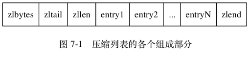
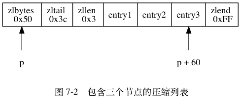
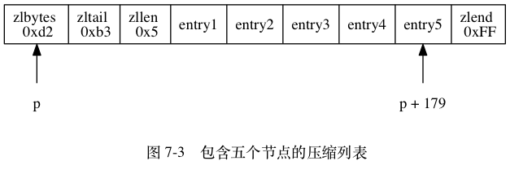

压缩列表是 Redis 为了节约内存而开发的， 由一系列特殊编码的连续内存块组成的顺序型（sequential）数据结构。
一个压缩列表可以包含任意多个节点（entry）， 每个节点可以保存一个字节数组或者一个整数值。
图 7-1 展示了压缩列表的各个组成部分， 表 7-1 则记录了各个组成部分的类型、长度、以及用途。

表 7-1 压缩列表各个组成部分的详细说明
| 属性 | 类型 | 长度 | 用途 |
|---|---|---|---|
zlbytes |
uint32_t |
4 字节 |
记录整个压缩列表占用的内存字节数：在对压缩列表进行内存重分配，
或者计算 zlend 的位置时使用。 |
zltail |
uint32_t |
4 字节 |
记录压缩列表表尾节点距离压缩列表的起始地址有多少字节： 通过这个偏移量，程序无须遍历整个压缩列表就可以确定表尾节点的地址。 |
zllen |
uint16_t |
2 字节 |
记录了压缩列表包含的节点数量：
当这个属性的值小于 UINT16_MAX （65535）时，
这个属性的值就是压缩列表包含节点的数量；
当这个值等于 UINT16_MAX 时，
节点的真实数量需要遍历整个压缩列表才能计算得出。 |
entryX |
列表节点 | 不定 | 压缩列表包含的各个节点，节点的长度由节点保存的内容决定。 |
zlend |
uint8_t |
1 字节 |
特殊值 0xFF （十进制 255 ），用于标记压缩列表的末端。 |
图 7-2 展示了一个压缩列表示例：
zlbytes 属性的值为 0x50 （十进制 80），
表示压缩列表的总长为 80 字节。zltail 属性的值为 0x3c （十进制 60），
这表示如果我们有一个指向压缩列表起始地址的指针 p ，
那么只要用指针 p 加上偏移量 60 ，
就可以计算出表尾节点 entry3 的地址。zllen 属性的值为 0x3 （十进制 3），
表示压缩列表包含三个节点。
图 7-3 展示了另一个压缩列表示例：
zlbytes 属性的值为 0xd2 （十进制 210），
表示压缩列表的总长为 210 字节。zltail 属性的值为 0xb3 （十进制 179），
这表示如果我们有一个指向压缩列表起始地址的指针 p ，
那么只要用指针 p 加上偏移量 179 ，
就可以计算出表尾节点 entry5 的地址。zllen 属性的值为 0x5 （十进制 5），
表示压缩列表包含五个节点。